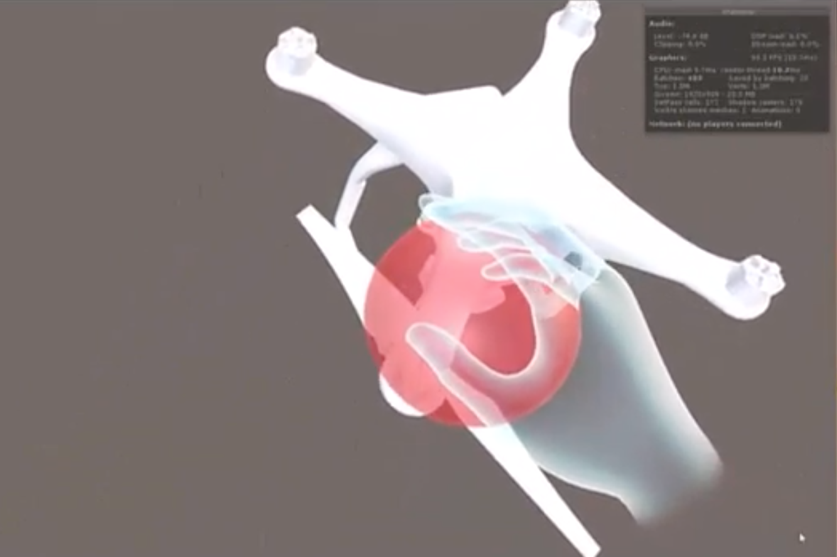
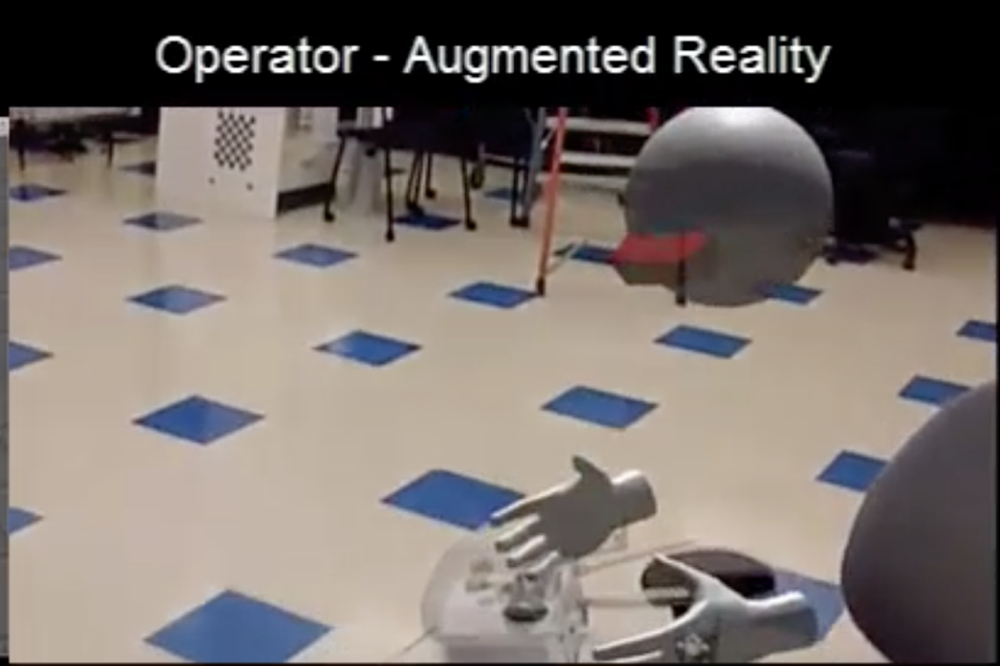
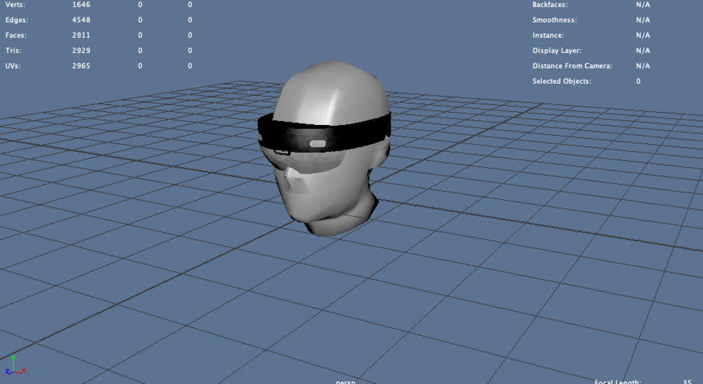
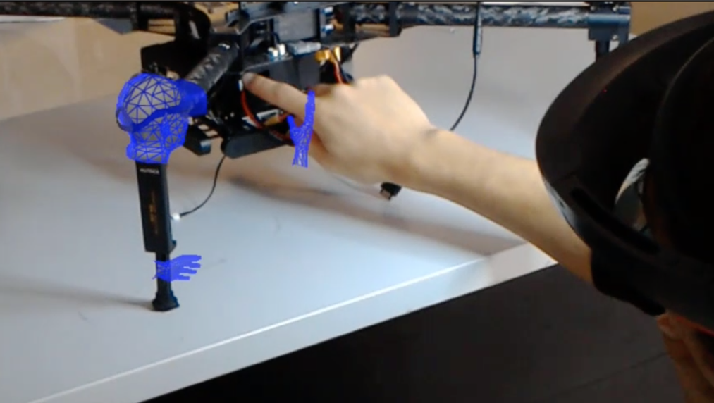
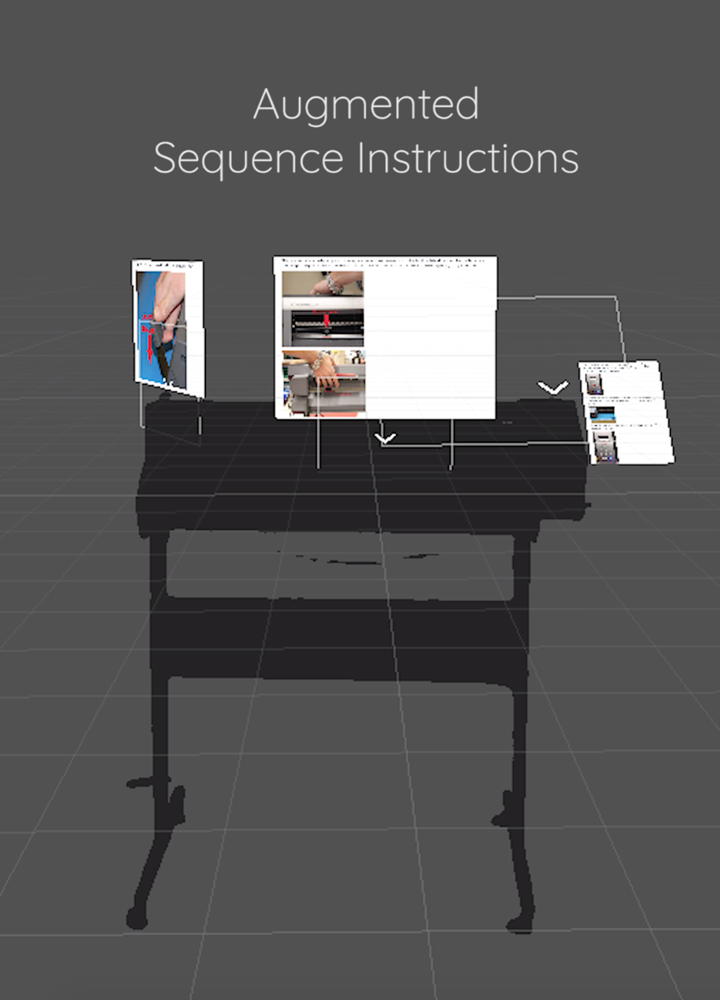
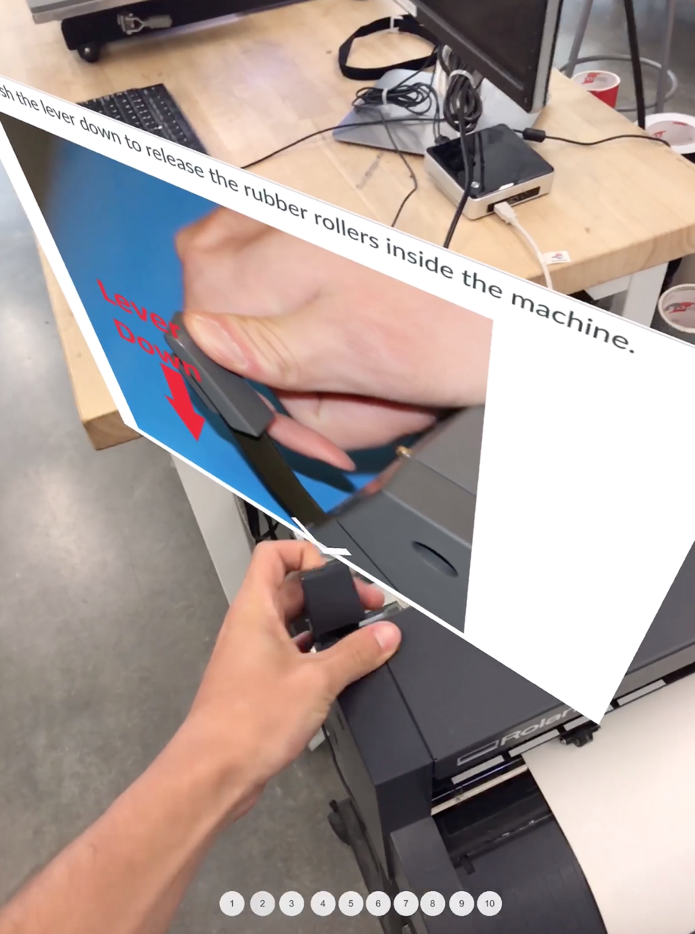
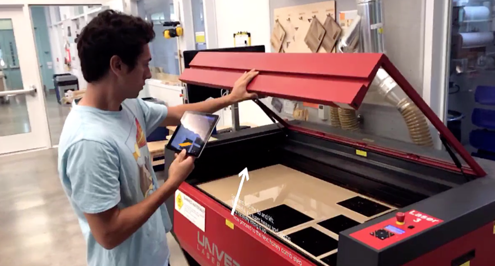
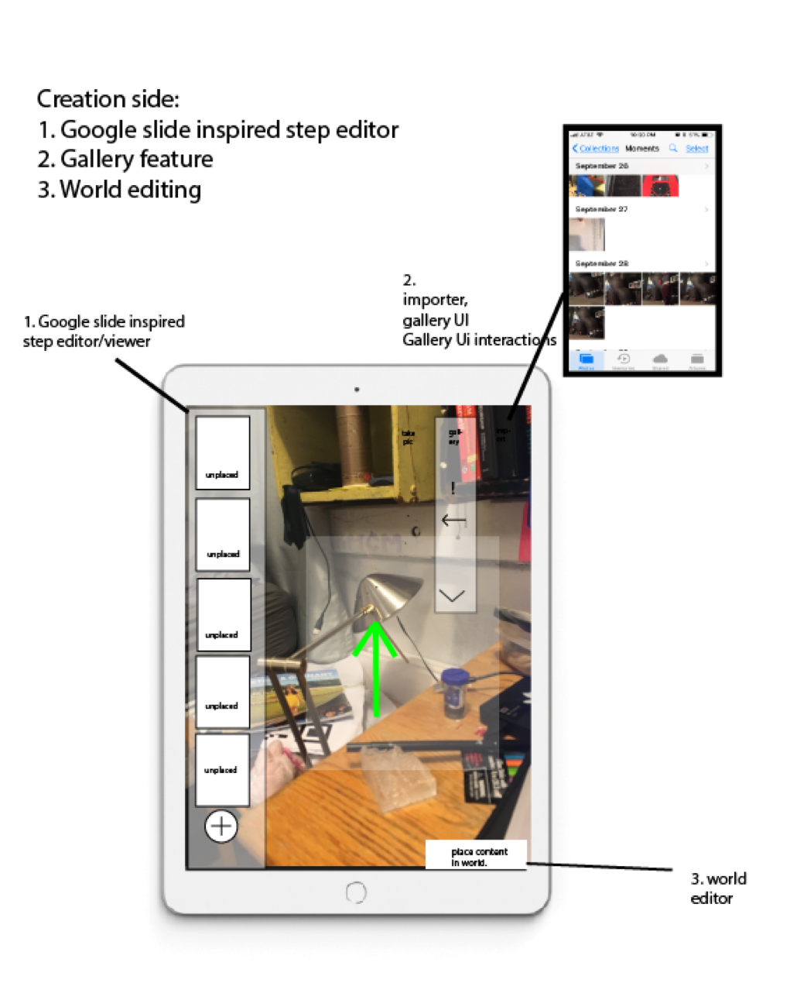

|
Project abstract: I led product development for my friends startup, and we would eventually a) win Microsoft's Imagine cup in 2018, b) get a research poster published at ISAM 2019, and c) turn it all into a company and get the backing of YCombinator in 2019.
After leaving PantheonVR, and beginning my slow startup recovery process, my friend approached me with a VR/AR problem of his own. The startup he was working on, built out of Berkeley’s Center for Augmented Cognition, had started to have VR design issues.
They needed some better interaction paradigms. I agreed: their main interaction tool was an enormous red sphere attached to a hand.
|  |
They need me to design a tool that would allow for several things. Not one to back down from a design challenge, especially with VR, I said yes.
|
|
They also needed me to design an environment for the VR side of their telepresence application. I came up with an infinite grid like structure, under a nice sky. I based this design mostly off the Oculus Medium design blog.

|
They also wanted me to improve their avatars, so I came up with a better design for the floating avatar.
|  |
I added more definition to the head, and added a headset to the operator.
|  |
I added a wireframe to the avatar, to add a more futuristic look.
|  |
In this time, the core founding members would take the project to Microsoft's imagine cup, winning first place at U.S nationals, and going on to worlds.
Heres the video link to this final Oculus/Hololens based telepresence application.
VideoAlthough we had received a variety of good signals from Microsoft about the state of the project, it was at this point in the project when we decided to consider a pivot. We had talked to about 20 companies at this point, and had dragged out negotiations with Siemens for over 9 months. There simply was no need for our solution: nothing justified the friction of VR operation and AR viewing.
To this day I don’t know if this was the right decision. Still, I think the signals showed that pursuing a hololens based telepresence app would hurt us in the long run. During our pivot discussions, I fought for an easier to use platform, insisting iPad and ARKit was the place to go with our product. After weeks of discussion, I was given the go ahead to build a prototype of a lightweight AR application for instructional delivery.
I built the first prototype for our “augmented sequence instructions.”
|  |
The idea was that someone would be able to see instructions through their iPad, and be able to interact with the machines. I used Unity3D to create the AR experience, which had a wrapper around ARKit1.5.
|  |
|  |
Here's a video of the AR application.
VideoThe whole pitch involved both a creation and consumption side for these instructions. What I had prototyped was just the “Consumption” side of the instructions, but what we really needed was the “Creation” side, to allow for the design specialists to create their own AR instructions easily, without a need for Unity or Photoshop.
The team sat down together, and I led a white boarding session. By the end, we had designed the creation side of the application. I tried to boil it down to it’s absolute essentials. The fact you could put it onto a single page felt like we had succeeded in coming up with a simple and usable design for creation and consumption of AR instructions.
|  |
We allocated work, and then started building. By the end of the semester, we had an application that could easily make and deliver instructions. We delivered it to Jacobs hall and called it a day.

|

|
The final video of the AR Instructions Application is here.
I collected all our learnings into this research folder over the course of the nine months on the Hololens and mobileAR aspects of our project. It encompasses business, design, and engineering possibilities.
Link to research folderThis is my favorite piece of the research, spent the most time on it, and I think it captured the state of AR instructions pretty well.
Link to docAfter the semester ended, Bryce, Vedant and Lear would leave to work at Apple. Luke would leave for Facebook.
Bill, Will, and Charles pitched the product to YC, and would be accepted. They would take the same journey I had a year prior. They pivoted to an indoor navigation tool.
https://www.pengramar.com/As for me, well, I would leave for Berlin for four months. I knew I’d regret not going. So I packed up my stuff, and left for the graffiti covered streets of Berlin.